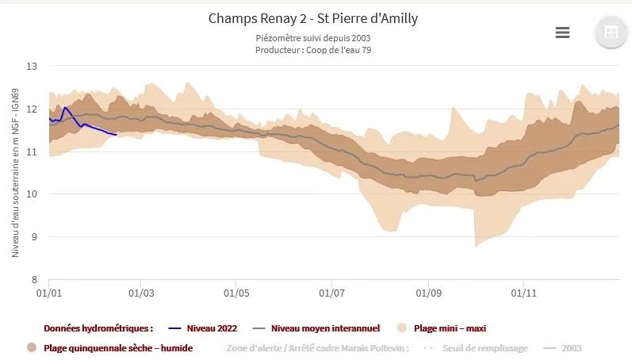

Publication relayée par le PCF 79
Méga-bassines. Un appel à manifester à Niort contre le remplissage du site de Mauzé-sur-le-Mignon
Date de mise à jour indiquée par Facebook · 15 février 2022
Texte de la publication · Bassines Non Merci
Salut à tous .
Samedi , tous à Niort pour dire Non aux bassines et exiger l'arrêt du remplissage de la basisnes SEV17 de Mauzé sur le Mignon
En dépit de niveaux de nappes au plus bas, et des rivières qui vont au plus mal, le remplissage de la bassine de Mauzé SEV17 bat son plein.
Alors que J. Castex a annoncé les conclusions du Varenne de l'eau le 1er février : 200 millions dans le cadre du plan de relance et l'extension des pouvoirs préfectoraux pour accélerer tous les projets de bassines en France, bafouer la loi sur l'eau et les directives européennes de protection de la nature et finalement remettre en cause l'ordre de priorité des usages de l'eau (eau potable - milieux naturel - usages économiques)
Malgré une opposition très large et le refus de signer le protocole (la chambre d'agriculture, le Grand Poitiers, Eaux de Vienne et TOUTES les associations de protections de la nature , le prefet de la Vienne pousse le projet de 41 bassines dans la Vienne et alors qu'on nous apprend la construction de deux Bassines dans le Berry construites en toute hâte
Mobilisons nous à nouveau pour que tous les affreux comprennent que les Bassines , c'est NON , ni ici , ni ailleurs !!!
Exigeons l'arrêt du remplissage des bassines
Rendons nous:
Samedi 19 Février 2022 à Niort
Sur la place du marché en contrebas des halles
dès 10H30
Au programme:
-Criée citoyenne et Fanfare pour
annoncer le Printemps Maraichin (25-26-27 mars) à partir de 11H
-Petite balade dans Niort... nous irons officiellement inviter le Prefet Aubry, ce serait dommage qu'il loupe le printemps maraichin avant sa mutation...
-Pêche aux gros Poissons du Protocole au port Boinot
-Pique nique au bord de l'eau
(ça tombe bien , vous aurez pu faire vos courses sur le marché...)
Le bleu de travail et les parapluies seront de sortie
NO BASSARAN

Sources
Bassines Non Merci · publication relayée par le PCF 79 · bibliothèque Facebook · AR-0002-FB-01961
À lire aussi · Procès liés aux méga-bassines. Appel à se rassembler à La Rochelle et à Niort